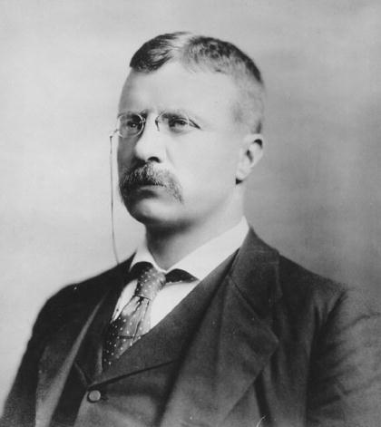
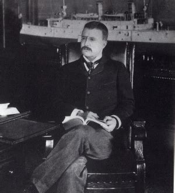

When Roosevelt returned from North Dakota in 1886, he married his lifelong friend, Edith Carow.
He ran for the mayor of New York City but came in third place.
In 1894, the mayor of NYC offered Roosevelt a job as police commissioner. Theodore then made several reforms in the police force.
He created yearly physical exams and firearm inspections. He also appointed officers based on their abilities and not by political connections.
Roosevelt would also regularly walk the streets at night making sure that police officers were on duty.
Roosevelt was appointed as the Assistant Secretary of the Navy in 1897, but resigned when war broke out between the United States and Spain.
 